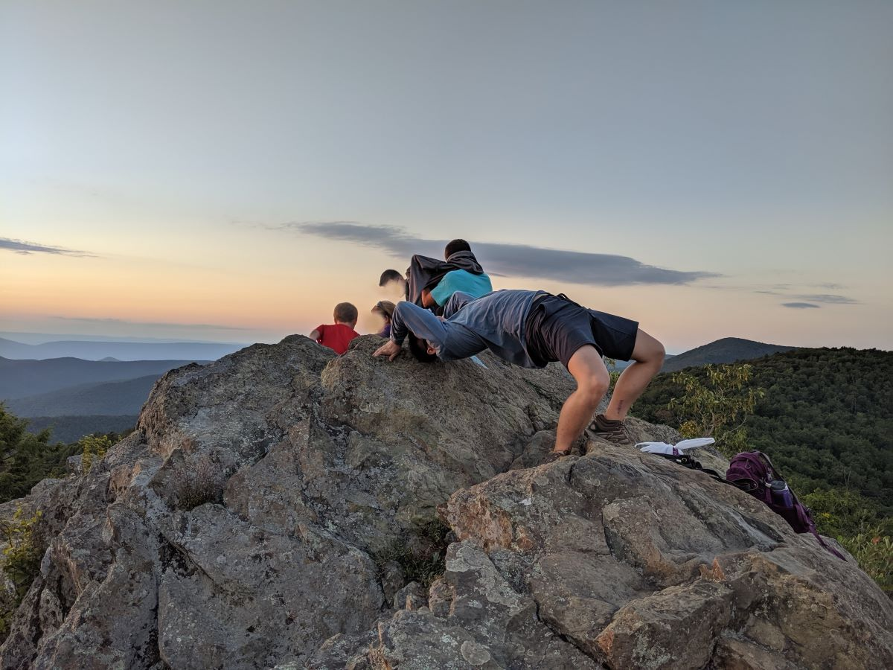

JLo's birthday
Today is my friend's birthday. He goes by JLo. A few of us went out for a little sunset hike in Shenendoah with him. We wanted to do Bearfence before it got dark since the terrain is pretty treacherous and then run over to Stony Man to watch the actual sunset. But by the time we got to Bearfence, we thought it'd take too long to make it back out to Stony Man. Little did we know Bearfence was actually a lot easier than we thought it'd be. We hiked half of it, turned back to grab another headlamp and a bag of watermelon from the car, and then hiked all the way to the end. We still had around an hour and a half to kill before the sun would start to set.
We hung out at the end of the trail for a bit and chatted some time away. But then we backtracked to the first viewpoint again since it has a nice 360° view. More chatting. But this time we also busted out the watermelon to munch on while we still had ~40 minutes to spare.
Finally the sun started to set, painting the sky in streaks of red and orange as it fell.
And instead of watching the sunset, JLo felt the need to do a bridge for the 'gram.
The nighttime trek back down wasn't too bad. It helped that it was our fourth time traversing that stretch of trail. We finished off the night with a bunch of delicious food from a Korean restaurant.